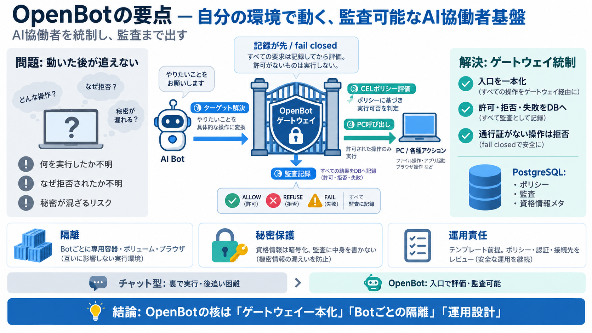

OpenBot: Open-Source Grok Bot for Any Harness | explainx.ai Blog | explainx.ai
OpenBot inverts that. CopilotKit is the company behind the AG-UI protocol — the open agent-to-user interaction layer alr…

AI協働者を統制し、監査まで出す
OpenBotは、ブラウザ操作やファイル処理、外部連携まで“実作業”できるAIエージェントを、ゲートウェイ経由で許可・拒否・失敗まで記録する設計です。/ 自分の環境で動かす
“動いた後”が追えない
AIがPCを操作できるほど、事故時に「何を実行したか」「なぜ拒否されたか」が分からないと統制できません。OpenBotは入口を一本化し、実行前評価と監査ログを前提に設計します。(監査可能性 / auditable)
入口が唯一で、記録が先
Botのブラウザ／ファイル／コマンド／MCP呼び出しは、ゲートウェイでターゲット解決→CELポリシー評価→監査記録→実行の順に進みます。fail closed（許可されない）を基本に据える
門番＋記録係
実行は、ゲートウェイが発行する“通行証（許可）”があるときだけ通ります。通行証がなければ拒否し、監査ログに“なぜ止まったか”を残すため、追跡が可能になります。
安全を多層で固める
Botごとに専用容器・専用ボリューム・専用ブラウザプロファイルで混線を抑えます。
/admin/credentials で資格情報を暗号化保管し、秘密の中身を返しません。
監査やトランスクリプトには、秘密の内容ではなく要求事実や所要時間などを記録します。
ポリシーが無い場合は許可されず、ルール破綻時も開かない（拒否側）設計です。
記録はDBに残す前提
ポリシー、監査、資格情報のメタ情報などをPostgreSQLへ保存する構成が重要だとされています。(データ永続化 / persistence) 記録が“読み返せる形”になることでガバナンスに繋がります。
実行の前に評価
実行対象（どこを操作するか等）を解決してから評価に進みます。
CELで許可／拒否を判断し、条件を“コード化”して管理します。(CEL / Common Expression Language)
許可・拒否・失敗の理由や結果を記録し、後から追跡できる形にします。
記録が存在する前提で、初めてコンピュータ操作へ進みます。
“できる”より“責任”
OpenBotは完成品のホスティングではなく、クローンして自分の環境で動かすテンプレートです。(運用責任 / responsibility) ポリシー設計、接続先（MCP等）、認証設定を適切にしないと期待値は下がります。
“裏で実行”ではない
実行経路や拒否理由が追えず、監査・原因特定が困難になりがちです。
ゲートウェイ一本化で、許可・拒否・失敗までログに残して追跡可能にします。
資格情報やトランスクリプトに秘密の中身が入るとリスクが上がります。
credentialsは暗号化保管し、監査には“秘密の中身”を載せない意図です。
AG-UIで対話を標準化
AG-UIは“エージェントとユーザーの対話”のプロトコルで、OpenBotはAG-UIで通信できるエージェントをBotとして扱える方針です。(枠を限定しない / framework-agnostic)
強い思想でも検証は必要
資料だけでは例外系や迂回経路の“厳密な塞ぎ”や監査網羅性を最終判断できません。加えて、fail closedでも“誤って許可するポリシー”を書けば事故は起こり得るため、テストとレビューが不可欠です。(運用検証 / validation)
要点だけ掴む
1) ゲートウェイ一本化で実行前評価と監査（許可・拒否・失敗）を記録します。
2) Botごとの隔離で資格情報や操作の混線リスクを下げます。
3) テンプレート前提で、ポリシー・認証・接続先の運用設計が成否を分けます。(結論 / takeaway)
OpenBot inverts that. CopilotKit is the company behind the AG-UI protocol — the open agent-to-user interaction layer alr…
Anmol Baranwal and Sofía Sánchez-ZárateSeptember 2, 2026 [...] Eli Berman September 1, 2026 [...] The agent stack and ec…
More at copilotkit.ai/openbot. ## Built on AG-UI A Bot is any endpoint speaking AG-UI, the open protocol for agent-to-…
Eli Berman August 12, 2026 [...] We're thrilled to announce AG-UI, the Agent-User Interaction Protocol, a streamlined br…
AG-UI is the Agent–User Interaction Protocol: the open, event-based standard for how an agent talks to the application a…